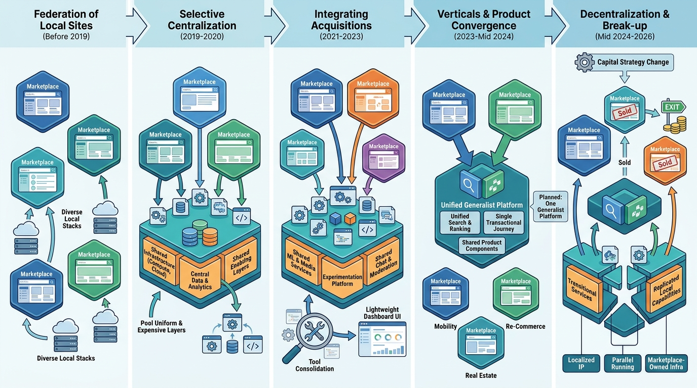

Part IX — PRACTICE: How Others Built It
Adevinta: From Schibsted's Copy-Paste Model to a Portfolio Platform

Image generated by Google Gemini (gemini-3-pro-image-preview)
Part IX — PRACTICE: How Others Built It

Image generated by Google Gemini (gemini-3-pro-image-preview)